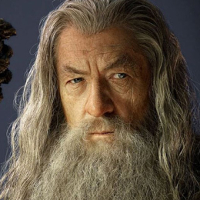

Gandalf Personality Statistics
Statistics for the character of Gandalf from Lord of the Rings, courtesy of the Open-Source Psychometrics Project. Open-Source Psychometrics
Full Personality Trait List
| Personality Traits | Average Rating | Rank |
|---|---|---|
| master (not apprentice) | 95 | 3 |
| high IQ (not low IQ) | 94.1 | 15 |
| old (not young) | 92.6 | 2 |
| wise (not foolish) | 91.5 | 5 |
| extraordinary (not mundane) | 91.4 | 10 |
| loyal (not traitorous) | 91.4 | 47 |
| mighty (not puny) | 91.4 | 7 |
| mature (not juvenile) | 91.2 | 10 |
| competent (not incompetent) | 90.8 | 46 |
| heroic (not villainous) | 90.6 | 29 |
| genius (not dunce) | 90.5 | 16 |
| tall (not short) | 90.3 | 9 |
| charismatic (not uninspiring) | 89.7 | 16 |
| resourceful (not helpless) | 89.4 | 47 |
| inspiring (not cringeworthy) | 88.7 | 6 |
| bold (not shy) | 88.1 | 110 |
| interesting (not tiresome) | 87.7 | 8 |
| alpha (not beta) | 87.7 | 51 |
| diligent (not lazy) | 87.1 | 149 |
| captain (not first-mate) | 86.8 | 52 |
| confident (not insecure) | 86.2 | 45 |
| street-smart (not sheltered) | 86 | 74 |
| worldly (not innocent) | 85.8 | 49 |
| intellectual (not physical) | 85.7 | 58 |
| emancipated (not enslaved) | 85.5 | 25 |
| dominant (not submissive) | 85.2 | 83 |
| independent (not codependent) | 85.2 | 33 |
| bookish (not sporty) | 84.9 | 89 |
| mysterious (not unambiguous) | 84.7 | 12 |
| complicated (not simple) | 84.6 | 24 |
| driven (not unambitious) | 84.5 | 186 |
| nurturing (not poisonous) | 84.5 | 63 |
| arcane (not mainstream) | 84.4 | 19 |
| confidential (not gossiping) | 84.2 | 86 |
| prestigious (not disreputable) | 84.1 | 38 |
| soulful (not soulless) | 84.1 | 104 |
| coordinated (not clumsy) | 83.8 | 99 |
| altruistic (not selfish) | 83.7 | 58 |
| compersive (not jealous) | 82.7 | 8 |
| tasteful (not lewd) | 82.6 | 54 |
| open to new experinces (not uncreative) | 81.8 | 78 |
| self-disciplined (not disorganized) | 81.8 | 172 |
| self-assured (not self-conscious) | 81.8 | 87 |
| eloquent (not unpolished) | 81.5 | 91 |
| decisive (not hesitant) | 81.4 | 123 |
| adventurous (not stick-in-the-mud) | 81.4 | 71 |
| civilized (not barbaric) | 81.2 | 123 |
| kind (not cruel) | 80.8 | 169 |
| assertive (not passive) | 80.2 | 165 |
| bossy (not meek) | 79.6 | 168 |
| workaholic (not slacker) | 79.6 | 204 |
| chaste (not lustful) | 79.4 | 19 |
| deliberate (not spontaneous) | 79.3 | 133 |
| curious (not apathetic) | 79.1 | 71 |
| pure (not debased) | 78.9 | 71 |
| historical (not modern) | 78.8 | 49 |
| calm (not anxious) | 78.3 | 34 |
| cryptic (not straightforward) | 77.3 | 21 |
| angelic (not demonic) | 77.2 | 99 |
| armoured (not vulnerable) | 76.9 | 126 |
| cautious (not impulsive) | 76.6 | 70 |
| charming (not awkward) | 76.4 | 107 |
| disarming (not creepy) | 76.3 | 129 |
| creative (not conventional) | 76 | 91 |
| playful (not shy) | 76 | 165 |
| metaphorical (not literal) | 75.5 | 19 |
| theist (not atheist) | 75.5 | 43 |
| active (not slothful) | 75.4 | 242 |
| equitable (not hypocritical) | 75.3 | 73 |
| suspicious (not awkward) | 75.2 | 135 |
| logical (not emotional) | 75 | 65 |
| sensible (not ludicrous) | 74.9 | 139 |
| highbrow (not lowbrow) | 74.9 | 108 |
| human (not animalistic) | 74.8 | 190 |
| open-minded (not close-minded) | 74.6 | 80 |
| guarded (not open) | 74.6 | 211 |
| resistant (not resigned) | 74.2 | 159 |
| focused on the future (not focused on the present) | 74.1 | 34 |
| healthy (not sickly) | 74.1 | 235 |
| utilitarian (not decorative) | 73.9 | 124 |
| existentialist (not nihilist) | 73.7 | 44 |
| devout (not heathen) | 73.6 | 93 |
| masculine (not feminine) | 73.2 | 206 |
| works hard (not plays hard) | 73.2 | 225 |
| rebellious (not obedient) | 71.9 | 205 |
| nerd (not jock) | 71.9 | 190 |
| fortunate (not unlucky) | 71.8 | 62 |
| hoarder (not unprepared) | 71.4 | 96 |
| philosophical (not real) | 71.4 | 31 |
| cooperative (not competitive) | 71.3 | 89 |
| conspiracist (not sheeple) | 71.2 | 174 |
| good-humored (not angry) | 71 | 167 |
| scruffy (not manicured) | 71 | 121 |
| thick-skinned (not sensitive) | 70.9 | 95 |
| forgiving (not vengeful) | 70.8 | 127 |
| reasoned (not instinctual) | 70.8 | 81 |
| respectful (not rude) | 70.5 | 184 |
| private (not gregarious) | 69.9 | 185 |
| child free (not pronatalist) | 69.9 | 203 |
| optimistic (not pessimistic) | 69.7 | 126 |
| literary (not mathematical) | 69.4 | 120 |
| weird (not normal) | 69.2 | 183 |
| attractive (not repulsive) | 68.8 | 295 |
| beautiful (not ugly) | 68.7 | 299 |
| unorthodox (not traditional) | 68.3 | 189 |
| warm (not cold) | 67.7 | 194 |
| patient (not impatient) | 67.7 | 100 |
| genuine (not sarcastic) | 67.4 | 196 |
| stoic (not expressive) | 67.2 | 135 |
| deviant (not average) | 67.1 | 224 |
| varied (not repetitive) | 66.8 | 31 |
| explorer (not builder) | 66.6 | 137 |
| reserved (not chatty) | 66.6 | 175 |
| demure (not vain) | 66.5 | 140 |
| spiritual (not skeptical) | 66.4 | 61 |
| hipster (not basic) | 66.2 | 60 |
| purple (not orange) | 65.5 | 99 |
| warm (not quarrelsome) | 65.5 | 158 |
| funny (not humorless) | 65.4 | 215 |
| frugal (not lavish) | 65.3 | 215 |
| bright (not depressed) | 64.9 | 170 |
| spicy (not mild) | 64.8 | 257 |
| rational (not whimsical) | 64.7 | 247 |
| strict (not lenient) | 64.3 | 226 |
| honorable (not cunning) | 64 | 244 |
| sober (not indulgent) | 63.7 | 190 |
| work-first (not family-first) | 63.7 | 249 |
| political (not nonpolitical) | 63.5 | 181 |
| down2earth (not head@clouds) | 62.9 | 232 |
| neurotypical (not autistic) | 62.9 | 377 |
| scholarly (not crafty) | 62.9 | 109 |
| involved (not remote) | 62.4 | 333 |
| complimentary (not insulting) | 62.3 | 210 |
| serious (not playful) | 62.1 | 310 |
| gendered (not androgynous) | 62 | 503 |
| wild (not tame) | 61.9 | 281 |
| objective (not subjective) | 61.4 | 101 |
| accepting (not judgemental) | 61.2 | 193 |
| specialist (not generalist) | 61 | 246 |
| proper (not scandalous) | 60.8 | 231 |
| socialist (not libertarian) | 60.6 | 49 |
| humble (not arrogant) | 60.5 | 176 |
| stable (not moody) | 60.4 | 139 |
| sheriff (not outlaw) | 60.2 | 237 |
| outsider (not insider) | 60.2 | 263 |
| thin (not thick) | 60.2 | 277 |
| quiet (not loud) | 59.4 | 235 |
| ivory-tower (not blue-collar) | 59.4 | 242 |
| hard (not soft) | 59.1 | 275 |
| classical (not avant-garde) | 59 | 260 |
| brave (not careful) | 58.9 | 325 |
| orderly (not chaotic) | 58.8 | 288 |
| hard (not soft) | 58.7 | 293 |
| serious (not bold) | 58.5 | 182 |
| leisurely (not hurried) | 58.5 | 201 |
| mischievous (not well behaved) | 58.3 | 322 |
| extreme (not moderate) | 58.3 | 334 |
| domestic (not industrial) | 58.3 | 185 |
| suspicious (not trusting) | 57.9 | 333 |
| scientific (not artistic) | 57.4 | 287 |
| sweet (not bitter) | 56.5 | 257 |
| night owl (not morning lark) | 55.9 | 336 |
| vague (not precise) | 55 | 151 |
| astonishing (not methodical) | 54.8 | 183 |
| luddite (not technophile) | 54.8 | 294 |
| rich (not poor) | 54.4 | 321 |
| edgy (not politically correct) | 54.2 | 366 |
| tense (not relaxed) | 54 | 461 |
| no-nonsense (not dramatic) | 53.9 | 302 |
| monochrome (not multicolored) | 53.8 | 279 |
| ferocious (not pacifist) | 53.6 | 362 |
| impartial (not biased) | 53.6 | 92 |
| low-tech (not high-tech) | 53.6 | 335 |
| happy (not sad) | 53.5 | 211 |
| proletariat (not bourgeoisie) | 53.4 | 325 |
| kinky (not vanilla) | 53.1 | 293 |
| realist (not idealist) | 53.1 | 308 |
| flexible (not rigid) | 52.6 | 237 |
| modest (not flamboyant) | 52.4 | 327 |
| communal (not individualist) | 52.4 | 240 |
| queer (not straight) | 52.3 | 90 |
| sorrowful (not cheery) | 51.9 | 384 |
| cosmopolitan (not provincial) | 51.9 | 300 |
| imaginative (not practical) | 51.9 | 202 |
| gracious (not feisty) | 51.9 | 157 |
| smooth (not rough) | 51.8 | 316 |
| transient (not permanent) | 51.8 | 261 |
| authoritarian (not democratic) | 51.7 | 294 |
| charming (not trusting) | 51.4 | 359 |
| scheduled (not spontaneous) | 51.2 | 380 |
| 'left-brained' (not 'right-brained') | 51.2 | 278 |
| backdoor (not official) | 51.2 | 379 |
| empirical (not theoretical) | 51.1 | 432 |
| obsessed (not aloof) | 50.8 | 475 |
| introvert (not extrovert) | 50.8 | 281 |
| neat (not messy) | 50.7 | 407 |
| stylish (not slovenly) | 50.6 | 425 |
| rugged (not refined) | 50.2 | 281 |
| fast (not slow) | 50.1 | 448 |
| direct (not roundabout) | 50.1 | 451 |
Top Five Most and Least Similar Characters
| Most Similar Characters | Least Similar Characters |
|---|---|
| 1. Albus Dumbledore(0.919) | 1. James Taggart(-0.639) |
| 2. Morpheus(0.86) | 2. George Costanza(-0.575) |
| 3. Obi-Wan Kenobi(0.857) | 3. Theon Greyjoy(-0.567) |
| 4. Aragorn(0.818) | 4. Ziggy Sobotka(-0.528) |
| 5. Dale Cooper(0.812) | 5. Dennis Nedry(-0.502) |
Full Personality Match List
| Full Match List | Universe | % Match |
|---|---|---|
| 1. Gandalf | Lord of the Rings | 98% |
| 2. Dale Cooper | Twin Peaks | 92% |
| 3. Morpheus | The Matrix | 90% |
| 4. Brandon Stark | Game of Thrones | 88% |
| 5. Albus Dumbledore | Harry Potter | 88% |
| 6. Dr. Strange | Marvel Cinematic Universe | 88% |
| 7. Obi-Wan Kenobi | Star Wars | 88% |
| 8. Josiah Bartlet | The West Wing | 86% |
| 9. Remus Lupin | Harry Potter | 85% |
| 10. Desmond Hume | LOST | 84% |
| 11. Lester Freamon | The Wire | 84% |
| 12. Rupert Giles | Buffy the Vampire Slayer | 84% |
| 13. Toby Ziegler | The West Wing | 83% |
| 14. John Munch | Law & Order SVU | 83% |
| 15. Jules Winnfield | Pulp Fiction | 83% |
| 16. Benjamin Sisko | Star Trek Deep Space Nine | 82% |
| 17. Norman Wilson | The Wire | 82% |
| 18. Peter Gregory | Silicon Valley | 82% |
| 19. Daniel Jackson | Stargate SG-1 | 82% |
| 20. Betsy Heron | Mean Girls | 82% |
| 21. Filius Flitwick | Harry Potter | 81% |
| 22. John Galt | Atlas Shrugged | 81% |
| 23. Hermione Granger | Harry Potter | 80% |
| 24. Minerva McGonagall | Harry Potter | 80% |
| 25. Severus Snape | Harry Potter | 80% |
| 26. Mr. Darcy | Pride and Prejudice | 80% |
| 27. Elizabeth Bennet | Pride and Prejudice | 80% |
| 28. Odo | Star Trek Deep Space Nine | 80% |
| 29. Lisa Simpson | The Simpsons | 80% |
| 30. Amy Farrah Fowler | The Big Bang Theory | 80% |
| 31. Lucius Fox | The Dark Knight | 80% |
| 32. Dr. Alan Grant | Jurassic Park | 80% |
| 33. Raymond Holt | Brooklyn Nine-Nine | 80% |
| 34. Sayid Jarrah | LOST | 79% |
| 35. Bruce Banner | Marvel Cinematic Universe | 79% |
| 36. Nick Fury | Marvel Cinematic Universe | 79% |
| 37. Derrial Book | Firefly + Serenity | 79% |
| 38. Victor Laszlo | Casablanca | 79% |
| 39. William Adama | Battlestar Galactica | 79% |
| 40. Friar Laurence | Romeo and Juliet | 79% |
| 41. Teal'c | Stargate SG-1 | 79% |
| 42. Ms. Sharon Norbury | Mean Girls | 79% |
| 43. Donald Mallard | NCIS | 79% |
| 44. Varys | Game of Thrones | 78% |
| 45. John Locke | LOST | 78% |
| 46. Aragorn | Lord of the Rings | 78% |
| 47. Legolas | Lord of the Rings | 78% |
| 48. Rust Cohle | True Detective | 78% |
| 49. Bertram Gilfoyle | Silicon Valley | 78% |
| 50. Dagny Taggart | Atlas Shrugged | 78% |
| 51. Leo McGarry | The West Wing | 77% |
| 52. Black Panther | Marvel Cinematic Universe | 77% |
| 53. Cristina Yang | Grey's Anatomy | 77% |
| 54. Miranda Bailey | Grey's Anatomy | 77% |
| 55. Princess Leia | Star Wars | 77% |
| 56. Harry Morgan | Dexter | 77% |
| 57. Laura Roslin | Battlestar Galactica | 77% |
| 58. The Oracle | The Matrix | 77% |
| 59. Ellen Ripley | Alien | 77% |
| 60. Carlisle Cullen | Twilight | 77% |
| 61. Carol Peletier | The Walking Dead | 76% |
| 62. Dexter Morgan | Dexter | 76% |
| 63. Omar Little | The Wire | 76% |
| 64. Bernard Lowe | Westworld | 76% |
| 65. Akecheta | Westworld | 76% |
| 66. Bert Cooper | Mad Men | 76% |
| 67. Neo | The Matrix | 76% |
| 68. Trinity | The Matrix | 76% |
| 69. Samantha Carter | Stargate SG-1 | 76% |
| 70. Ariadne | Inception | 76% |
| 71. Red Reznikov | Orange is the New Black | 76% |
| 72. Henry Rearden | Atlas Shrugged | 76% |
| 73. Jasper Hale | Twilight | 76% |
| 74. Randall Pearson | This Is Us | 76% |
| 75. Alastor Moody | Harry Potter | 75% |
| 76. Mike Ehrmantraut | Breaking Bad | 75% |
| 77. John Bates | Downton Abbey | 75% |
| 78. Sheldon Cooper | The Big Bang Theory | 75% |
| 79. The Operative | Firefly + Serenity | 75% |
| 80. Abed Nadir | Community | 75% |
| 81. Dale Horvath | The Walking Dead | 75% |
| 82. Miranda Hobbes | Sex and the City | 75% |
| 83. Cedric Daniels | The Wire | 75% |
| 84. Robert Ford | Westworld | 75% |
| 85. Alfred Pennyworth | The Dark Knight | 75% |
| 86. Peggy Olson | Mad Men | 75% |
| 87. Dr. Ellie Sattler | Jurassic Park | 75% |
| 88. Sherlock Holmes | Sherlock | 75% |
| 89. Ellis Wyatt | Atlas Shrugged | 75% |
| 90. Jonah Byrde | Ozark | 75% |
| 91. C. J. Cregg | The West Wing | 74% |
| 92. Iroh | Avatar The Last Airbender | 74% |
| 93. Donna Pinciotti | That 70's Show | 74% |
| 94. Richard Webber | Grey's Anatomy | 74% |
| 95. Rick Blaine | Casablanca | 74% |
| 96. Willow Rosenberg | Buffy the Vampire Slayer | 74% |
| 97. Dr. Ian Malcolm | Jurassic Park | 74% |
| 98. Ray Arnold | Jurassic Park | 74% |
| 99. Mycroft Holmes | Sherlock | 74% |
| 100. Fox Mulder | The X-Files | 74% |
| 101. Dana Scully | The X-Files | 74% |
| 102. Dom Cobb | Inception | 74% |
| 103. Edward Cullen | Twilight | 74% |
| 104. Leroy Jethro Gibbs | NCIS | 74% |
| 105. Marty Byrde | Ozark | 74% |
| 106. Tyrion Lannister | Game of Thrones | 73% |
| 107. Davos Seaworth | Game of Thrones | 73% |
| 108. Brienne of Tarth | Game of Thrones | 73% |
| 109. Olenna Tyrell | Game of Thrones | 73% |
| 110. Joey Lucas | The West Wing | 73% |
| 111. Katara | Avatar The Last Airbender | 73% |
| 112. Peggy Carter | Marvel Cinematic Universe | 73% |
| 113. Gus Fring | Breaking Bad | 73% |
| 114. Kima Greggs | The Wire | 73% |
| 115. Mufasa | The Lion King | 73% |
| 116. Melinda Warner | Law & Order SVU | 73% |
| 117. Samwell Tarly | Game of Thrones | 72% |
| 118. Abbey Bartlet | The West Wing | 72% |
| 119. Jadzia Dax | Star Trek Deep Space Nine | 72% |
| 120. Captain Marvel | Marvel Cinematic Universe | 72% |
| 121. Charlie Carson | Downton Abbey | 72% |
| 122. Leslie Winkle | The Big Bang Theory | 72% |
| 123. Ron Swanson | Parks and Recreation | 72% |
| 124. River Tam | Firefly + Serenity | 72% |
| 125. James Gordon | The Dark Knight | 72% |
| 126. Angel | Buffy the Vampire Slayer | 72% |
| 127. Olivia Benson | Law & Order SVU | 72% |
| 128. Donald Cragen | Law & Order SVU | 72% |
| 129. Jet Black | Cowboy Bebop | 72% |
| 130. Mr. Saito | Inception | 72% |
| 131. William H. 'Shakespeare' Hill | This Is Us | 72% |
| 132. Ruth Langmore | Ozark | 72% |
| 133. Arya Stark | Game of Thrones | 71% |
| 134. Toph Beifong | Avatar The Last Airbender | 71% |
| 135. Hakoda | Avatar The Last Airbender | 71% |
| 136. Kira Nerys | Star Trek Deep Space Nine | 71% |
| 137. Gamora | Marvel Cinematic Universe | 71% |
| 138. Simon Tam | Firefly + Serenity | 71% |
| 139. Bruce Wayne | The Dark Knight | 71% |
| 140. Janis Ian | Mean Girls | 71% |
| 141. Arthur | Inception | 71% |
| 142. Sirius Black | Harry Potter | 70% |
| 143. Benjamin Linus | LOST | 70% |
| 144. Jin-Soo Kwon | LOST | 70% |
| 145. Juliet Burke | LOST | 70% |
| 146. Worf | Star Trek Deep Space Nine | 70% |
| 147. Meredith Grey | Grey's Anatomy | 70% |
| 148. Preston Burke | Grey's Anatomy | 70% |
| 149. Walter White | Breaking Bad | 70% |
| 150. Rick Grimes | The Walking Dead | 70% |
| 151. Glenn Rhee | The Walking Dead | 70% |
| 152. Daryl Dixon | The Walking Dead | 70% |
| 153. Katniss Everdeen | The Hunger Games | 70% |
| 154. Spiros 'Vondas' Vondopoulos | The Wire | 70% |
| 155. Maeve Millay | Westworld | 70% |
| 156. Elsie Hughes | Westworld | 70% |
| 157. Jared Dunn | Silicon Valley | 70% |
| 158. Odafin Tutuola | Law & Order SVU | 70% |
| 159. Walter Skinner | The X-Files | 70% |
| 160. George S. Hammond | Stargate SG-1 | 70% |
| 161. Jo March | Little Women | 70% |
| 162. Taystee Jefferson | Orange is the New Black | 70% |
| 163. Rosa Diaz | Brooklyn Nine-Nine | 70% |
| 164. Alice Cullen | Twilight | 70% |
| 165. Dwight Schrute | The Office | 69% |
| 166. Zoe Washburne | Firefly + Serenity | 69% |
| 167. Russell 'Stringer' Bell | The Wire | 69% |
| 168. Dennis 'Cutty' Wise | The Wire | 69% |
| 169. Rachel Menken | Mad Men | 69% |
| 170. Eric Taylor | Friday Night Lights | 69% |
| 171. Amy Santiago | Brooklyn Nine-Nine | 69% |
| 172. Timothy McGee | NCIS | 69% |
| 173. Beth Pearson | This Is Us | 69% |
| 174. Catelyn Stark | Game of Thrones | 68% |
| 175. Josh Lyman | The West Wing | 68% |
| 176. Charlie Young | The West Wing | 68% |
| 177. Zuko | Avatar The Last Airbender | 68% |
| 178. Sun-Hwa Kwon | LOST | 68% |
| 179. Elim Garak | Star Trek Deep Space Nine | 68% |
| 180. Black Widow | Marvel Cinematic Universe | 68% |
| 181. C-3PO | Star Wars | 68% |
| 182. Violet Crawley, Dowager Countess | Downton Abbey | 68% |
| 183. Bernadette Rostenkowski | The Big Bang Theory | 68% |
| 184. Elizabeth Swann | Pirates of the Caribbean | 68% |
| 185. Janet Fraiser | Stargate SG-1 | 68% |
| 186. Marmee March | Little Women | 68% |
| 187. Woody | Toy Story | 68% |
| 188. Landry Clarke | Friday Night Lights | 68% |
| 189. Francis Mulcahy | M*A*S*H | 68% |
| 190. Eddard Stark | Game of Thrones | 67% |
| 191. Asha Greyjoy | Game of Thrones | 67% |
| 192. Molly Weasley | Harry Potter | 67% |
| 193. Arthur Weasley | Harry Potter | 67% |
| 194. Jack Shephard | LOST | 67% |
| 195. Julian Bashir | Star Trek Deep Space Nine | 67% |
| 196. Thanos | Marvel Cinematic Universe | 67% |
| 197. Frodo Baggins | Lord of the Rings | 67% |
| 198. Inara Serra | Firefly + Serenity | 67% |
| 199. Dolores Abernathy | Westworld | 67% |
| 200. Richard Hendricks | Silicon Valley | 67% |
| 201. Abby Sciuto | NCIS | 67% |
| 202. Jon Snow | Game of Thrones | 66% |
| 203. Tywin Lannister | Game of Thrones | 66% |
| 204. Captain America | Marvel Cinematic Universe | 66% |
| 205. Darth Vader | Star Wars | 66% |
| 206. Robert Crawley, 7th Earl of Grantham | Downton Abbey | 66% |
| 207. Leonard Hofstadter | The Big Bang Theory | 66% |
| 208. Chris Partlow | The Wire | 66% |
| 209. Nala | The Lion King | 66% |
| 210. Rachel Chu | Crazy Rich Asians | 66% |
| 211. Evan | Superbad | 66% |
| 212. Peter | The Room | 66% |
| 213. Sansa Stark | Game of Thrones | 65% |
| 214. Melisandre | Game of Thrones | 65% |
| 215. Harry Potter | Harry Potter | 65% |
| 216. Ginny Weasley | Harry Potter | 65% |
| 217. Luna Lovegood | Harry Potter | 65% |
| 218. Ross Geller | Friends | 65% |
| 219. Angela Martin | The Office | 65% |
| 220. Sam Seaborn | The West Wing | 65% |
| 221. Waylon Smithers | The Simpsons | 65% |
| 222. Elsie Carson | Downton Abbey | 65% |
| 223. Leslie Knope | Parks and Recreation | 65% |
| 224. Rachel Dawes | The Dark Knight | 65% |
| 225. Felix Gaeta | Battlestar Galactica | 65% |
| 226. Lane Pryce | Mad Men | 65% |
| 227. Dr. John Watson | Sherlock | 65% |
| 228. Vicious | Cowboy Bebop | 65% |
| 229. Ash | Alien | 65% |
| 230. Alex Vause | Orange is the New Black | 65% |
| 231. Matt Saracen | Friday Night Lights | 65% |
| 232. Jimmy Palmer | NCIS | 65% |
| 233. Wendy Byrde | Ozark | 65% |
| 234. Daenerys Targaryen | Game of Thrones | 64% |
| 235. Jorah Mormont | Game of Thrones | 64% |
| 236. Monica Geller | Friends | 64% |
| 237. Stanley Hudson | The Office | 64% |
| 238. Tony Stark | Marvel Cinematic Universe | 64% |
| 239. Haymitch Abernathy | The Hunger Games | 64% |
| 240. Thomas Matthews | Dexter | 64% |
| 241. Rhonda Pearlman | The Wire | 64% |
| 242. Henry Francis | Mad Men | 64% |
| 243. Friar Tuck | Robin Hood | 64% |
| 244. the Alien | Alien | 64% |
| 245. Marsellus Wallace | Pulp Fiction | 64% |
| 246. Michael Bluth | Arrested Development | 64% |
| 247. Benjamin 'Hawkeye' Pierce | M*A*S*H | 64% |
| 248. April Ludgate | Parks and Recreation | 63% |
| 249. Carl Grimes | The Walking Dead | 63% |
| 250. Bunk Moreland | The Wire | 63% |
| 251. Michael Lee | The Wire | 63% |
| 252. Theresa Cullen | Westworld | 63% |
| 253. Anastasia Dualla | Battlestar Galactica | 63% |
| 254. Monica Hall | Silicon Valley | 63% |
| 255. Dallas | Alien | 63% |
| 256. Francisco d'Anconia | Atlas Shrugged | 63% |
| 257. George Michael Bluth | Arrested Development | 63% |
| 258. Sandor Clegane | Game of Thrones | 62% |
| 259. Nog | Star Trek Deep Space Nine | 62% |
| 260. Red Forman | That 70's Show | 62% |
| 261. Derek Shepherd | Grey's Anatomy | 62% |
| 262. Flynn White | Breaking Bad | 62% |
| 263. Man in Black | Westworld | 62% |
| 264. Harvey Dent | The Dark Knight | 62% |
| 265. Buffy Summers | Buffy the Vampire Slayer | 62% |
| 266. Eleanor Sung-Young | Crazy Rich Asians | 62% |
| 267. Sheriff Truman | Twin Peaks | 62% |
| 268. Benvolio | Romeo and Juliet | 62% |
| 269. Nick Carraway | The Great Gatsby | 62% |
| 270. Buzz Lightyear | Toy Story | 62% |
| 271. Esme Cullen | Twilight | 62% |
| 272. Wyatt Langmore | Ozark | 62% |
| 273. Lord Voldemort | Harry Potter | 61% |
| 274. Dukat | Star Trek Deep Space Nine | 61% |
| 275. Miles O'Brien | Star Trek Deep Space Nine | 61% |
| 276. Apu Nahasapeemapetilon | The Simpsons | 61% |
| 277. James Doakes | Dexter | 61% |
| 278. Roland 'Prez' Pryzbylewski | The Wire | 61% |
| 279. Beatrice 'Beadie' Russell | The Wire | 61% |
| 280. Astrid Leong-Teo | Crazy Rich Asians | 61% |
| 281. John Hammond | Jurassic Park | 61% |
| 282. Molly Hooper | Sherlock | 61% |
| 283. Agent Smith | The Matrix | 61% |
| 284. Beth March | Little Women | 61% |
| 285. Mr. Potato Head | Toy Story | 61% |
| 286. Charlie Swan | Twilight | 61% |
| 287. Rosalie Hale | Twilight | 61% |
| 288. Helen Seinfeld | Seinfeld | 61% |
| 289. Miguel Rivas | This Is Us | 61% |
| 290. Jacob Snell | Ozark | 61% |
| 291. Stannis Baratheon | Game of Thrones | 60% |
| 292. Dobby | Harry Potter | 60% |
| 293. Nymphadora Tonks | Harry Potter | 60% |
| 294. Steven Hyde | That 70's Show | 60% |
| 295. Lady Mary Crawley | Downton Abbey | 60% |
| 296. Mary Cooper | The Big Bang Theory | 60% |
| 297. Malcolm Reynolds | Firefly + Serenity | 60% |
| 298. Maurice Levy | The Wire | 60% |
| 299. Billy Keikeya | Battlestar Galactica | 60% |
| 300. Elliot Stabler | Law & Order SVU | 60% |
| 301. The Nurse | Romeo and Juliet | 60% |
| 302. Tami Taylor | Friday Night Lights | 60% |
| 303. Ygritte | Game of Thrones | 59% |
| 304. Lady Catherine de Bourgh | Pride and Prejudice | 59% |
| 305. George O'Malley | Grey's Anatomy | 59% |
| 306. Mr. Burns | The Simpsons | 59% |
| 307. Ned Flanders | The Simpsons | 59% |
| 308. Samwise Gamgee | Lord of the Rings | 59% |
| 309. Lady Edith Crawley | Downton Abbey | 59% |
| 310. Coriolanus Snow | The Hunger Games | 59% |
| 311. Maria LaGuerta | Dexter | 59% |
| 312. Vince Masuka | Dexter | 59% |
| 313. Avon Barksdale | The Wire | 59% |
| 314. Galen Tyrol | Battlestar Galactica | 59% |
| 315. Josie Packard | Twin Peaks | 59% |
| 316. Robert Fischer | Inception | 59% |
| 317. Terry Jeffords | Brooklyn Nine-Nine | 59% |
| 318. Jack Pearson | This Is Us | 59% |
| 319. Winn Adami | Star Trek Deep Space Nine | 58% |
| 320. Hawkeye | Marvel Cinematic Universe | 58% |
| 321. Milhouse Van Houten | The Simpsons | 58% |
| 322. Luke Skywalker | Star Wars | 58% |
| 323. Gimli | Lord of the Rings | 58% |
| 324. Anna Bates | Downton Abbey | 58% |
| 325. Beryl Patmore | Downton Abbey | 58% |
| 326. Annie Edison | Community | 58% |
| 327. Peeta Mellark | The Hunger Games | 58% |
| 328. Gale Hawthorne | The Hunger Games | 58% |
| 329. Charlotte Hale | Westworld | 58% |
| 330. Lee 'Apollo' Adama | Battlestar Galactica | 58% |
| 331. Number Six | Battlestar Galactica | 58% |
| 332. Sharon 'Boomer' Valerii | Battlestar Galactica | 58% |
| 333. Karl 'Helo' Agathon | Battlestar Galactica | 58% |
| 334. James Norrington | Pirates of the Caribbean | 58% |
| 335. Jian-Yang | Silicon Valley | 58% |
| 336. Ed Hurley | Twin Peaks | 58% |
| 337. Julia | Cowboy Bebop | 58% |
| 338. Bo Peep | Toy Story | 58% |
| 339. Jason Street | Friday Night Lights | 58% |
| 340. Walter 'Radar' O'Reilly | M*A*S*H | 58% |
| 341. Fleur Delacour | Harry Potter | 57% |
| 342. Aang | Avatar The Last Airbender | 57% |
| 343. Jake Sisko | Star Trek Deep Space Nine | 57% |
| 344. Marge Simpson | The Simpsons | 57% |
| 345. Principal Skinner | The Simpsons | 57% |
| 346. Lady Sybil Crawley | Downton Abbey | 57% |
| 347. Raj Koothrappali | The Big Bang Theory | 57% |
| 348. Stuart Bloom | The Big Bang Theory | 57% |
| 349. Anthony Garcia | The Dark Knight | 57% |
| 350. Scar | The Lion King | 57% |
| 351. Joan Holloway | Mad Men | 57% |
| 352. Nick Young | Crazy Rich Asians | 57% |
| 353. Hector Barbossa | Pirates of the Caribbean | 57% |
| 354. Joshamee Gibbs | Pirates of the Caribbean | 57% |
| 355. Will Turner | Pirates of the Caribbean | 57% |
| 356. Jack O'Neill | Stargate SG-1 | 57% |
| 357. Robin Hood | Robin Hood | 57% |
| 358. Nicky Nichols | Orange is the New Black | 57% |
| 359. Johnny | The Room | 57% |
| 360. Jerry Seinfeld | Seinfeld | 57% |
| 361. Alan Harper | Two and Half Men | 57% |
| 362. Berta | Two and Half Men | 57% |
| 363. Charlotte Byrde | Ozark | 57% |
| 364. Darlene Snell | Ozark | 57% |
| 365. Petyr Baelish | Game of Thrones | 56% |
| 366. Robert California | The Office | 56% |
| 367. Azula | Avatar The Last Airbender | 56% |
| 368. Kasidy Yates | Star Trek Deep Space Nine | 56% |
| 369. Thor | Marvel Cinematic Universe | 56% |
| 370. Skyler White | Breaking Bad | 56% |
| 371. Hank Schrader | Breaking Bad | 56% |
| 372. The Narrator | Fight Club | 56% |
| 373. Saul Tigh | Battlestar Galactica | 56% |
| 374. Mrs. Hudson | Sherlock | 56% |
| 375. Morty Seinfeld | Seinfeld | 56% |
| 376. Margaery Tyrell | Game of Thrones | 55% |
| 377. Rubeus Hagrid | Harry Potter | 55% |
| 378. Mr. William Collins | Pride and Prejudice | 55% |
| 379. Hugo 'Hurley' Reyes | LOST | 55% |
| 380. Cora Crawley, Countess of Grantham | Downton Abbey | 55% |
| 381. Debra Morgan | Dexter | 55% |
| 382. Frank Sobotka | The Wire | 55% |
| 383. Ashley Stubbs | Westworld | 55% |
| 384. Felix Lutz | Westworld | 55% |
| 385. Timon | The Lion King | 55% |
| 386. D.I. Greg Lestrade | Sherlock | 55% |
| 387. Donna Hayward | Twin Peaks | 55% |
| 388. Ed | Cowboy Bebop | 55% |
| 389. Jules | Superbad | 55% |
| 390. Mal Cobb | Inception | 55% |
| 391. Rebecca Pearson | This Is Us | 55% |
| 392. Margaret 'Hot Lips' Houlihan | M*A*S*H | 55% |
| 393. Cersei Lannister | Game of Thrones | 54% |
| 394. Cho Chang | Harry Potter | 54% |
| 395. Jim Halpert | The Office | 54% |
| 396. Firelord Ozai | Avatar The Last Airbender | 54% |
| 397. Kaylee Frye | Firefly + Serenity | 54% |
| 398. William Rawls | The Wire | 54% |
| 399. D'Angelo Barksdale | The Wire | 54% |
| 400. Lau | The Dark Knight | 54% |
| 401. Dinesh Chugtai | Silicon Valley | 54% |
| 402. Pete Martell | Twin Peaks | 54% |
| 403. Maid Marian | Robin Hood | 54% |
| 404. Crazy Eyes | Orange is the New Black | 54% |
| 405. Robb Stark | Game of Thrones | 53% |
| 406. Viktor Krum | Harry Potter | 53% |
| 407. Jane Bennet | Pride and Prejudice | 53% |
| 408. Addison Montgomery | Grey's Anatomy | 53% |
| 409. Sarah O'Brien | Downton Abbey | 53% |
| 410. Shirley Bennett | Community | 53% |
| 411. Reginald 'Bubbles' Cousins | The Wire | 53% |
| 412. Ilsa Lund | Casablanca | 53% |
| 413. Salvatore Romano | Mad Men | 53% |
| 414. Paul Kinsey | Mad Men | 53% |
| 415. Stan Rizzo | Mad Men | 53% |
| 416. Catherine Martell | Twin Peaks | 53% |
| 417. Damian Leigh | Mean Girls | 53% |
| 418. Kate Pearson | This Is Us | 53% |
| 419. Toby Damon | This Is Us | 53% |
| 420. Maeby Funke | Arrested Development | 53% |
| 421. Horace Slughorn | Harry Potter | 52% |
| 422. Moaning Myrtle | Harry Potter | 52% |
| 423. Phoebe Buffay | Friends | 52% |
| 424. Chandler Bing | Friends | 52% |
| 425. Kate Austen | LOST | 52% |
| 426. Ann Perkins | Parks and Recreation | 52% |
| 427. Mark Brendanawicz | Parks and Recreation | 52% |
| 428. Hoban Washburne | Firefly + Serenity | 52% |
| 429. Mr. Big | Sex and the City | 52% |
| 430. Angel Batista | Dexter | 52% |
| 431. Ervin Burrell | The Wire | 52% |
| 432. Don Draper | Mad Men | 52% |
| 433. Meg March | Little Women | 52% |
| 434. Lambert | Alien | 52% |
| 435. Charles Boyle | Brooklyn Nine-Nine | 52% |
| 436. Butch Coolidge | Pulp Fiction | 52% |
| 437. Bella Swan | Twilight | 52% |
| 438. Georgiana Darcy | Pride and Prejudice | 51% |
| 439. Sokka | Avatar The Last Airbender | 51% |
| 440. Quark | Star Trek Deep Space Nine | 51% |
| 441. Loki | Marvel Cinematic Universe | 51% |
| 442. Eric Forman | That 70's Show | 51% |
| 443. Alex Karev | Grey's Anatomy | 51% |
| 444. Howard Wolowitz | The Big Bang Theory | 51% |
| 445. Britta Perry | Community | 51% |
| 446. Tyler Durden | Fight Club | 51% |
| 447. Charlotte York | Sex and the City | 51% |
| 448. Tommy Carcetti | The Wire | 51% |
| 449. The Joker | The Dark Knight | 51% |
| 450. Kara 'Starbuck' Thrace | Battlestar Galactica | 51% |
| 451. Spike Spiegel | Cowboy Bebop | 51% |
| 452. Jay Gatsby | The Great Gatsby | 51% |
| 453. Jordan Baker | The Great Gatsby | 51% |
| 454. Cady Heron | Mean Girls | 51% |
| 455. Jacob Black | Twilight | 51% |
| 456. Judith Harper-Melnick | Two and Half Men | 51% |
| 457. Oberyn Martell | Game of Thrones | 50% |
| 458. Bellatrix Lestrange | Harry Potter | 50% |
| 459. Pam Beesly | The Office | 50% |
| 460. Jimmy McGill | Breaking Bad | 50% |
| 461. Steve Brady | Sex and the City | 50% |
| 462. Goh Peik Lin | Crazy Rich Asians | 50% |
| 463. Gavin Belson | Silicon Valley | 50% |
| 464. Fogell | McLovin | |
| 465. George Bluth, Sr. | Arrested Development | 50% |
| 466. Roy Petty | Ozark | 50% |
| 467. Dolores Umbridge | Harry Potter | 49% |
| 468. Jane Margolis | Breaking Bad | 49% |
| 469. Boromir | Lord of the Rings | 49% |
| 470. Jimmy McNulty | The Wire | 49% |
| 471. Gaius Baltar | Battlestar Galactica | 49% |
| 472. Little John | Robin Hood | 49% |
| 473. Elaine Benes | Seinfeld | 49% |
| 474. Sophie | This Is Us | 49% |
| 475. Jan Levinson | The Office | 48% |
| 476. Rom | Star Trek Deep Space Nine | 48% |
| 477. Edna Krabappel | The Simpsons | 48% |
| 478. Jeff Winger | Community | 48% |
| 479. Preston 'Bodie' Broadus | The Wire | 48% |
| 480. Ken Cosgrove | Mad Men | 48% |
| 481. Audrey Horne | Twin Peaks | 48% |
| 482. Norma Jennings | Twin Peaks | 48% |
| 483. Leland Palmer | Twin Peaks | 48% |
| 484. Oscar Bluth | Arrested Development | 48% |
| 485. Bronn | Game of Thrones | 47% |
| 486. George Weasley | Harry Potter | 47% |
| 487. Phyllis Lapin | The Office | 47% |
| 488. Donna Moss | The West Wing | 47% |
| 489. Maggie Hart | True Detective | 47% |
| 490. Colin Khoo | Crazy Rich Asians | 47% |
| 491. Benjamin Horne | Twin Peaks | 47% |
| 492. Parker | Alien | 47% |
| 493. Buster Bluth | Arrested Development | 47% |
| 494. Frank Burns | M*A*S*H | 47% |
| 495. Draco Malfoy | Harry Potter | 46% |
| 496. Michael Dawson | LOST | 46% |
| 497. Cally Henderson | Battlestar Galactica | 46% |
| 498. Samuel 'Longshot' Anders | Battlestar Galactica | 46% |
| 499. Harry Crane | Mad Men | 46% |
| 500. Jack Sparrow | Pirates of the Caribbean | 46% |
| 501. Sid Phillips | Toy Story | 46% |
| 502. Sam Healy | Orange is the New Black | 46% |
| 503. Vincent Vega | Pulp Fiction | 46% |
| 504. Cosmo Kramer | Seinfeld | 46% |
| 505. Evelyn Harper | Two and Half Men | 46% |
| 506. Tobias Funke | Arrested Development | 46% |
| 507. Lucille Bluth | Arrested Development | 46% |
| 508. Rachel Garrison | Ozark | 46% |
| 509. Maxwell Klinger | M*A*S*H | 46% |
| 510. Jaime Lannister | Game of Thrones | 45% |
| 511. James 'Sawyer' Ford | LOST | 45% |
| 512. Kitty Forman | That 70's Show | 45% |
| 513. Moe Szyslak | The Simpsons | 45% |
| 514. William Mason | Downton Abbey | 45% |
| 515. Thomas Barrow | Downton Abbey | 45% |
| 516. Ian Duncan | Community | 45% |
| 517. Marla Singer | Fight Club | 45% |
| 518. Samantha Jones | Sex and the City | 45% |
| 519. Pumbaa | The Lion King | 45% |
| 520. James Hurley | Twin Peaks | 45% |
| 521. Lucy Moran | Twin Peaks | 45% |
| 522. Mercutio | Romeo and Juliet | 45% |
| 523. Pennsatucky Doggett | Orange is the New Black | 45% |
| 524. Mia Wallace | Pulp Fiction | 45% |
| 525. George Costanza | Seinfeld | 45% |
| 526. Anthony DiNozzo | NCIS | 45% |
| 527. Cornelius Fudge | Harry Potter | 44% |
| 528. Han Solo | Star Wars | 44% |
| 529. Pierce Hawthorne | Community | 44% |
| 530. Teddy Flood | Westworld | 44% |
| 531. Erlich Bachman | Silicon Valley | 44% |
| 532. Gollum | Lord of the Rings | 43% |
| 533. Andrea | The Walking Dead | 43% |
| 534. Merle Dixon | The Walking Dead | 43% |
| 535. Effie Trinket | The Hunger Games | 43% |
| 536. Clarence Royce | The Wire | 43% |
| 537. Simba | The Lion King | 43% |
| 538. Theodore Laurence | Little Women | 43% |
| 539. Jake Peralta | Brooklyn Nine-Nine | 43% |
| 540. Ron Weasley | Harry Potter | 42% |
| 541. Charlie Pace | LOST | 42% |
| 542. Marty Hart | True Detective | 42% |
| 543. Rita Bennett | Dexter | 42% |
| 544. Faye Valentine | Cowboy Bebop | 42% |
| 545. Rex | Toy Story | 42% |
| 546. Tim Riggins | Friday Night Lights | 42% |
| 547. Tyra Collette | Friday Night Lights | 42% |
| 548. Emmett Cullen | Twilight | 42% |
| 549. Joffrey Baratheon | Game of Thrones | 41% |
| 550. Charles Bingley | Pride and Prejudice | 41% |
| 551. Peter Jason Quill | Marvel Cinematic Universe | 41% |
| 552. Jesse Pinkman | Breaking Bad | 41% |
| 553. Ellis Carver | The Wire | 41% |
| 554. Roger Sterling | Mad Men | 41% |
| 555. Ty Lee | Avatar The Last Airbender | 40% |
| 556. Claire Littleton | LOST | 40% |
| 557. Nelson Muntz | The Simpsons | 40% |
| 558. Marie Schrader | Breaking Bad | 40% |
| 559. Jayne Cobb | Firefly + Serenity | 40% |
| 560. Craig Pelton | Community | 40% |
| 561. Ben Chang | Community | 40% |
| 562. Shane Walsh | The Walking Dead | 40% |
| 563. Clay Davis | The Wire | 40% |
| 564. Sal Maroni | The Dark Knight | 40% |
| 565. Pete Campbell | Mad Men | 40% |
| 566. Nelson Bighetti | Silicon Valley | 40% |
| 567. Seth | Superbad | 40% |
| 568. Amy March | Little Women | 40% |
| 569. Flaca Gonzales | Orange is the New Black | 40% |
| 570. Ringo | Pulp Fiction | 40% |
| 571. Petunia Dursley | Harry Potter | 39% |
| 572. Rita Skeeter | Harry Potter | 39% |
| 573. Michael Scott | The Office | 39% |
| 574. Kevin Malone | The Office | 39% |
| 575. Meredith Palmer | The Office | 39% |
| 576. Daisy Mason | Downton Abbey | 39% |
| 577. Troy Barnes | Community | 39% |
| 578. Carrie Bradshaw | Sex and the City | 39% |
| 579. Nick Sobotka | The Wire | 39% |
| 580. Lee Sizemore | Westworld | 39% |
| 581. Dennis Nedry | Jurassic Park | 39% |
| 582. Tom Buchanan | The Great Gatsby | 39% |
| 583. Officer Slater | Superbad | 39% |
| 584. Kelly Erin Hannon | The Office | 38% |
| 585. Fez | That 70's Show | 38% |
| 586. Krusty the Clown | The Simpsons | 38% |
| 587. Merry Brandybuck | Lord of the Rings | 38% |
| 588. Smash Williams | Friday Night Lights | 38% |
| 589. George Oscar 'Gob' Bluth | Arrested Development | 38% |
| 590. Theon Greyjoy | Game of Thrones | 37% |
| 591. Ryan Howard | The Office | 37% |
| 592. Xander Harris | Buffy the Vampire Slayer | 37% |
| 593. Romeo Montague | Romeo and Juliet | 37% |
| 594. Regina George | Mean Girls | 37% |
| 595. Becca | Superbad | 37% |
| 596. Prince John | Robin Hood | 37% |
| 597. Julie Taylor | Friday Night Lights | 37% |
| 598. Joey Tribbiani | Friends | 36% |
| 599. Barney Gumble | The Simpsons | 36% |
| 600. Joey Quinn | Dexter | 36% |
| 601. Cypher | The Matrix | 36% |
| 602. Juliet Capulet | Romeo and Juliet | 36% |
| 603. Sheriff of Nottingham | Robin Hood | 36% |
| 604. Piper Chapman | Orange is the New Black | 36% |
| 605. Charlie Harper | Two and Half Men | 36% |
| 606. Jake Harper | Two and Half Men | 36% |
| 607. Andy Bernard | The Office | 35% |
| 608. Bob Pinciotti | That 70's Show | 35% |
| 609. Izzie Stevens | Grey's Anatomy | 35% |
| 610. Pippin Took | Lord of the Rings | 35% |
| 611. Betty Draper | Mad Men | 35% |
| 612. Cordelia Chase | Buffy the Vampire Slayer | 35% |
| 613. Lorna Morello | Orange is the New Black | 35% |
| 614. Bart Simpson | The Simpsons | 34% |
| 615. Bobby Briggs | Twin Peaks | 34% |
| 616. Denny | The Room | 34% |
| 617. Mrs. Bennet | Pride and Prejudice | 33% |
| 618. Clementine Pennyfeather | Westworld | 33% |
| 619. Lyla Garrity | Friday Night Lights | 33% |
| 620. Michelle | The Room | 33% |
| 621. Homer Simpson | The Simpsons | 32% |
| 622. Tom Haverford | Parks and Recreation | 32% |
| 623. Ziggy Sobotka | The Wire | 32% |
| 624. Kevin Pearson | This Is Us | 32% |
| 625. Lindsay Bluth Funke | Arrested Development | 32% |
| 626. Jackie Burkhart | That 70's Show | 31% |
| 627. Thomas 'Herc' Hauk | The Wire | 31% |
| 628. Logan Delos | Westworld | 31% |
| 629. Karen Smith | Mean Girls | 30% |
| 630. June George | Mean Girls | 30% |
| 631. Kelly Kapoor | The Office | 29% |
| 632. Midge Pinciotti | That 70's Show | 29% |
| 633. Penny | The Big Bang Theory | 29% |
| 634. Lori Grimes | The Walking Dead | 29% |
| 635. Rachel Green | Friends | 28% |
| 636. Aaron Samuels | Mean Girls | 28% |
| 637. Shae | Game of Thrones | 27% |
| 638. George Wickham | Pride and Prejudice | 25% |
| 639. Michael Kelso | That 70's Show | 25% |
| 640. Shelly Johnson | Twin Peaks | 25% |
| 641. Lisa | The Room | 25% |
| 642. Shannon Rutherford | LOST | 24% |
| 643. Daisy Buchanan | The Great Gatsby | 24% |
| 644. Myrtle Wilson | The Great Gatsby | 23% |
| 645. Gretchen Wieners | Mean Girls | 22% |
| 646. Lydia Bennet | Pride and Prejudice | 21% |
| 647. James Taggart | Atlas Shrugged | 19% |
| 648. Mark | The Room | 19% |